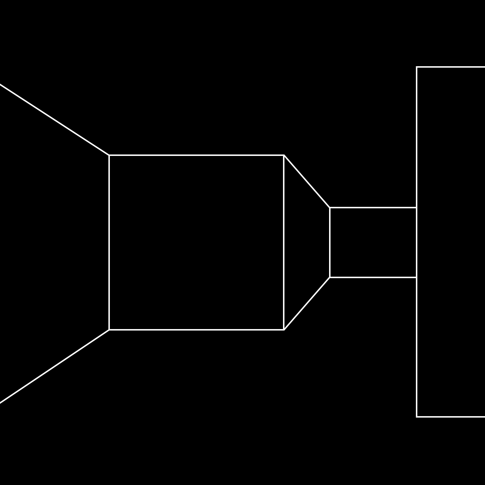

Roland Barthes suggests there are three ways to finish any piece of writing: the ending will have the last word or the ending will be silent or the ending will execute a pirouette, do something unexpectedly incongruent.